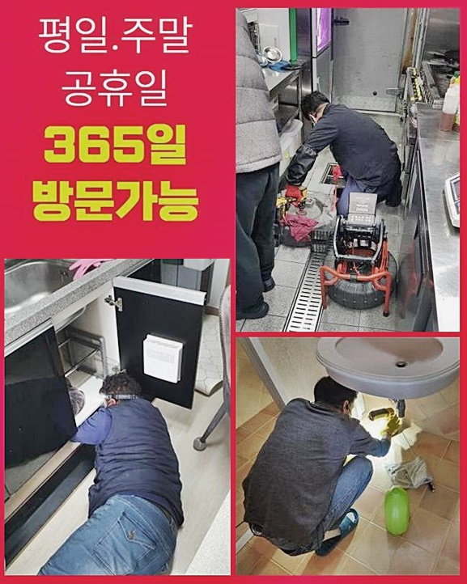
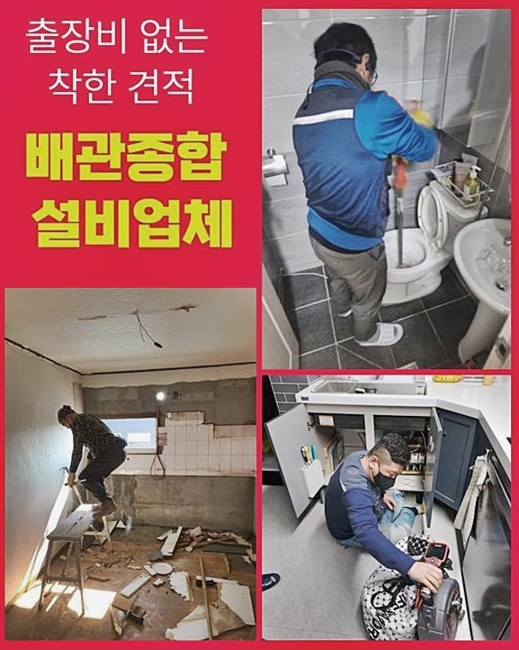
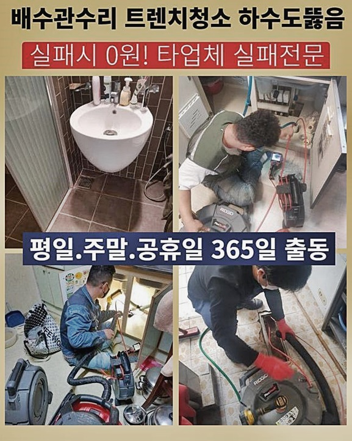
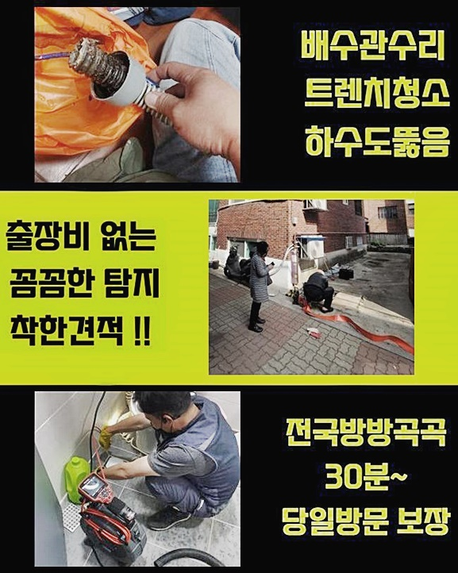
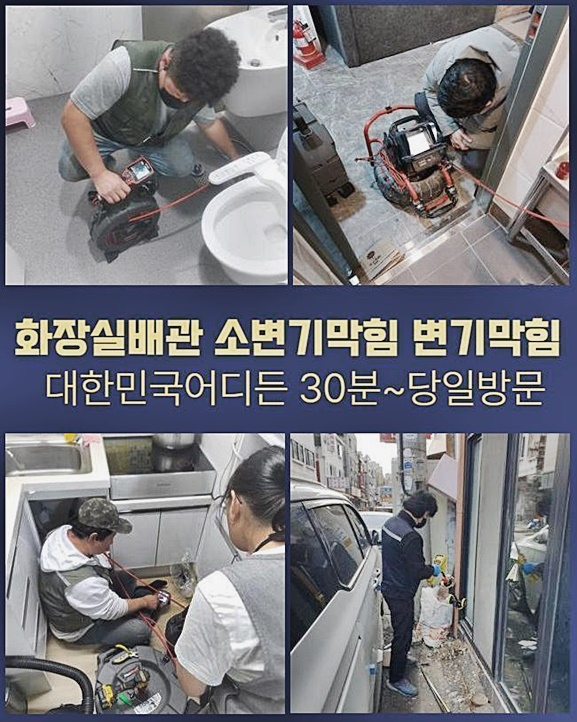
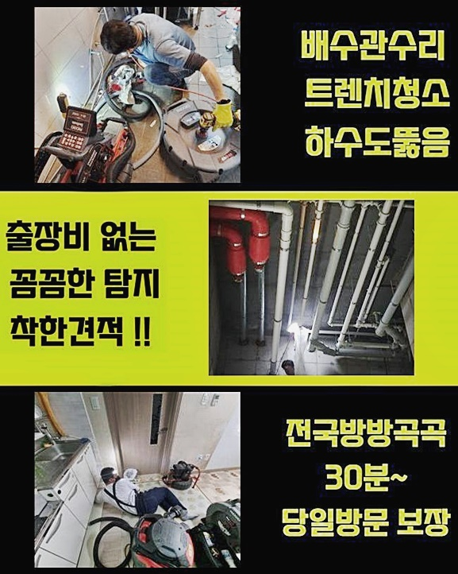

🏠 중구 회현동싱크대배수구역류 저동1가 배관내시경카메라 수리업체
용인 싱크대막힘 전문 시공 후기

📋 작업 개요
- 위치: 용인
- 서비스 유형: 싱크대막힘, 하수구막힘, 배관막힘, 역류해결, 배관청소, 고압세척
- 작업 일시: 2024. 7. 31. 9:37
- 업체명: 하수구수사대 (010-5615-2118)
🔍 문제 상황
좋은하루입니다
하수관로 막힘의 문제 구역이라면 어디든지 문제없이 방문드리는 배관문제 해결사입니다
예전에 의뢰자분께서 다용도실내부 하수파이프에 문제가 발생하였다며 연락을 주셨기때문에 문제공간에 찾아갔습니다
중구 회현동싱크대배수구역류 저동1가 배관내시경카메라 수리업체
물빠짐이 전혀 이루어지지 않더니 악취까지 풍겨 긴급히 저희 베테랑에게 도움을 요청하셨습니다
저희 수리업체는 관련 문제공간에 방문하여 배수관이 막히는 이슈의 요인을 조사하고 완벽하게 해결했습니다
어떤 단계를 거쳐 배수 장애의 이유를 발견해 고치게 되었는지 같이 보면서 설명드리겠습니다
만약에라도 똑같은 상태에 처하게 된다면 걱정하지 마시고 이제 살펴볼 내용들을 기억하시면 도움이 되실 것 같습니다
저희 베테랑이 찾아간 장소는 주거지역으로 의뢰인 댁의 다용도 공간에 세탁기 배수관이 막힘이 생겼다고 이야기하셨어요
고객님의 이야기를 듣고 상황을 확인해보니 고약한 냄새가 나면서 비눗물이 올라오며 역류되고 있는 사태가 일어났어요
해결하기 전에 근본적인 이유를 찾아내기 위해서 배수관 악취를 어느 순간부터 감지하게 되셨는지 하나씩 체크했어요

🔎 원인 분석
💡 전문가 진단: 정밀 진단 장비를 사용하여 슬러지의 고착 여부를 판명하고 타격/세척 작업을 실시했습니다.
고객께선 분명하지는 않지만 약 4주 전부터 물이 흐르는 것이 느려졌던 느낌이 들었다고 어렴풋하게 기억하고 있는대로 이야기했어요
다용도실 하수관 막힘이 생기면 주로 예상치 못하게 일이 벌어졌다고 여기시지만 사실상 이 현장처럼 전조 현상이 있어요
하지만 이런 현상을 대수롭지 않게 여기며 지나치고 무시해 결국엔 이와 같이 물이 배출되지 않는 증상까지 벌어진 것입니다
물을 이용하는 위치라면 하수관에서 발생하는 불쾌한 냄새가 아님에도 싱크대나 세면볼등 악취가 퍼질 수 있게 되죠
심한 냄새가 발생하는 것 이는 바로 배수구 안쪽에서 찌꺼기가 부패한다는 의미라고 여기시면 문제들이 생겼다는 걸 금방 생각할 수 있을거예요
막힘장소에 방문해 하수관에 물을 부었더니 고객분이 말한 그대로 세제거품들이 거꾸로 솟아나오면서 악취도 퍼지기 시작했어요
이런식으로 하수배관 역한냄새가 발생하면 안쪽 오염물을 제거하는 작업이 필요하므로 제일 첫단계로 석션기구로 첫번째 청소 작업을 수행했습니다
석션기기는 집안에서 사용하고 계신 깊은 부분에 더러운 물질 청소는 어려울지라도 입구쪽에 있는 물과 불순물을 없애는 것은 할 수 있었어요
저희 베테랑은 어떤 작업장이든 무작정 다양한 작업들을 추진하지 않고 단계적 작업으로 필요하지 않은 작업을 제외합니다
배관 카메라 장비를 넣을 수 있지만 크게 막히지 않았다면 석션장비로 대다수의 문제가 해소되기 때문이죠
전문수리 기사님이 막힘장소에 방문후에 어떤 수단으로 상황을 대처하느냐에 따라 최종적으로는 의뢰인의 수리비로 청구되기 때문에 신중해야합니다
저희 수리업체는 어느 장소든 요인을 철저하게 검토 한 후 수리하는 절차에서 의뢰인분들의 경비 부담까지 감안하여 무의미한 과정을 실시하지 않습니다

🔧 작업 과정
먼저 석션기기를 활용해 안쪽 찌꺼기를 없애는 공정을 완료하였더니 돌멩이같은 불순물들이 확인되었습니다
더러운 물질을 검토해보니 배수구 악취를 일으키는 또하나의 찌꺼기인 슬러지덩어리가 안쪽에 있다는 것을 알아냈습니다
그리하여 배수관 내시경기기를 사용하여 막힌 오염물이 어느곳에 얼마나 많이 쌓여있는 상태인지 철저하게 점검하기로 했어요
배수구 내시경기기는 길고 가느다란 파이프 끝에 카메라장비와 라이트가 일체형으로 붙어있으며 다른쪽 끝부분엔 모니터가 있습니다
어두컴컴하고 기다란 하수관 안의 상황들을 라이브로 확인할 수 있기 때문에 문제를 발견해 깔끔하게 해결 가능 하도록 돕는 도구입니다
하수배관 내에 투입해보니 불순물 덩어리들이 관찰되었고 모래와 흡사한 잔여물도 찾아낼수 있었습니다
저희 전문가가 방문했던 작업장은 이처럼 배수관 깊숙이 문제를 일으키는 더러운 물질은 배수구 청소장치가 진입하기 힘들어
긴 튜브를 덧대어 연결한 다음 작업을 수행하거나 샤프트 장치를 활용하여 갈아내고 닦아내는 조치를 해요
저희 베테랑은 이처럼 실전 경력이 풍부해 문제를 파악해내는 데 문제 없고 문제를 파악해도 효과적인 수단으로 처리가능하므로 의뢰자분의 우려를 확실하게 처리해 드려요
이렇게 방식이 정해지게 되면 지체하지 않고 배수구 안쪽을 씻어내며 찌꺼기를 없애서 하수관로 악취가 퍼져서 불편을 주는 막힘의 이유를 해결합니다
초기 실행하고 끝내는 것이 아닌 다시 세척을 진행하여 시도한 후 하수가 원활히 배수되는지 배수 테스트로 검토 한 후
다시 배수관 내부에 카메라장비를 삽입해 검사하면서 남은 물질들은 없는지 깨끗하게 세척되었는지 검사합니다
저희 팀이 수리했던 문제구역은 수차례 장애상황을 일으키는 것을 확인하여 문제없이 말끔하다고 체크하고 나면 수리를 마치게됩니다
배수구에서 제거된 불순물들이 이만큼이나 많아 고약한 냄새가 발생하고 찌꺼기가 퇴적되면서 역류 또한 생겨났어요
종종 부엌싱크와 붙어있는 하수관로의 경우 요리하며 발생한 기름 잔재들이 하수배관에 달라 붙어가며 기름슬러지들과 음식 잔여물이 보이기도 합니다
이런 상황에서는 하수구 시스템이 세탁기 쪽과 싱크대아래의 배수관이 연결되어 있으므로 부엌 싱크에서 흘러나온 물이 세탁기방향 배수구로 역류 현상이 발생할 때도 있죠
이런 문제는 난해한 조건이라서 저희 기사님처럼 전문가들만 처리할 수 있는 상태이기 때문에 불쾌한 냄새가 배수구에서 올라오면서 물이 흐르는 상태가 원활하지 않다고 느껴진다면 위에서 검토한 경우 같은 역류현상이 시작되기 전 징조인 것을 기억하셔야해요
역류현상이 시작되기 전 전문인에게 수리를 의뢰하시면 예방 조치가 가능하다는 사실을 참고해주시면 도움이 되실거예요


✅ 작업 완료
도착하기전에도 유선연락을 통해 도움을 드리며 방문뒤에 세심한 검사를 완료하여 의뢰인 집에 맞는 최적의 방안을 적용해드립니다
적절한 해결책으로 배관 막힘을 해결하길 권유드립니다 혹여라도 불합리한 시공방법을 사용해 가정에서 처리를 시도하시는데
되려 여건을 더 나빠지게 하는 사례가 대부분이기 때문에 저희 수리업체로 재상담 요청을 자주 주시곤 하십니다
집안에서 문제가 풀린다면 좋을테지만 악화되는 사태를 예방하기 위해 상담을 최우선으로 받으시는 편이 합리적인 판단입니다
고객 상담은 24시간 열려있어요 필요할땐 전화주시고 문제를 해결하시길 바랍니다



⚠️ 주방 싱크대 배관 막힘 예방 수칙
- ✅ 기름기가 묻은 식기나 프라이팬은 설거지 전 키친타올로 반드시 기름때를 닦아내세요.
- ✅ 주기적으로 싱크대 개수대에 뜨거운 물을 가득 받아 한 번에 내려 배관 내부 기름을 씻어내세요.
- ✅ 배수구 거름망을 미세한 필터로 사용하시고 음식물 찌꺼기가 틈으로 새어 들지 않게 관리하세요.
- ✅ 베이킹소다와 식초를 뜨거운 물과 함께 일주일에 한 번씩 부어주면 배관 살균과 막힘 예방에 좋습니다.
💡 핵심 정리
- 확실한 장비 작업(내시경 점검 및 샤프트 스케일링)으로 원인을 뿌리 뽑습니다.
- 작업 후 1년 이내에 동일한 부위 재발 시 100% 무상 A/S 서비스를 보장합니다.
- 서울 · 경기 · 인천 전 지역에 24시간 언제든 긴급 출동할 수 있도록 항시 대기 중입니다.
❓ 자주 묻는 질문 (FAQ)
🚨 용인 싱크대막힘 문제로 고민이신가요?
정확한 원인 진단과 확실한 시공으로 재발 없는 해결을 약속드립니다.
24시간 긴급 출동 | 서울 · 경기 · 인천 전지역 | 1년 내 재발 시 무상 A/S